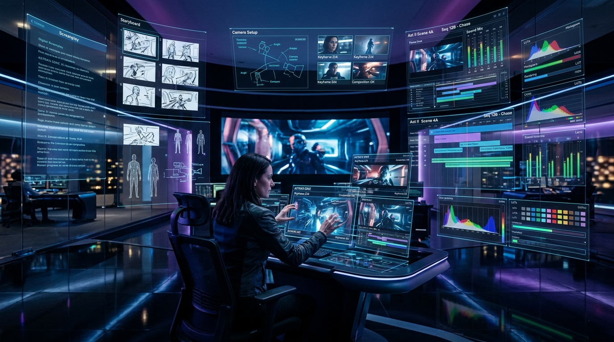
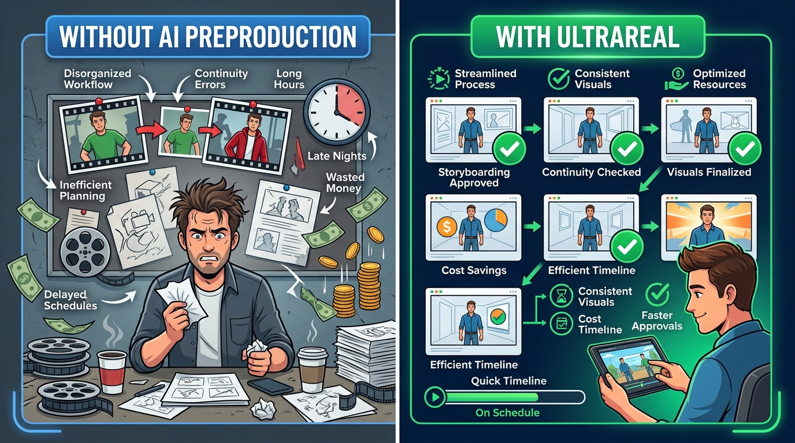
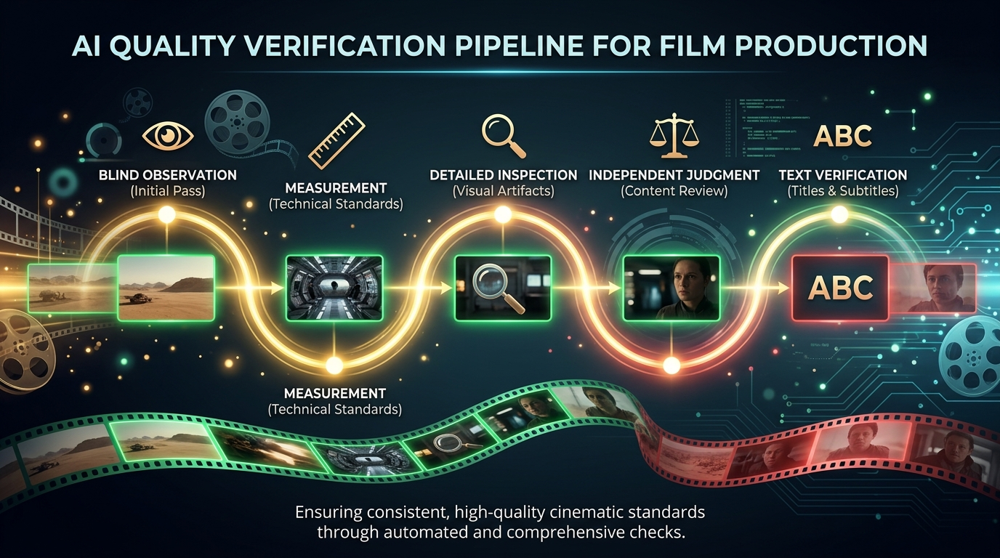
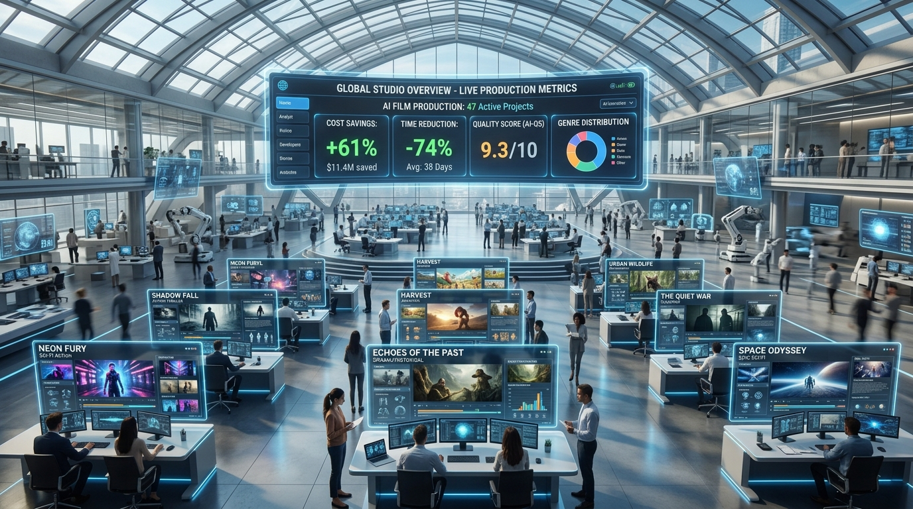

UltraReal V2 transforms written screenplays into production-ready film assets — with multi-model quality verification, forensic continuity tracking, cost controls, and creative safeguards that don't exist anywhere else.

Today, creating AI-generated films means:
Each video generation attempt costs real money. Without quality checks, most attempts fail — and you pay for every failure. There's no way to know if a scene will work before spending on it.
Characters change appearance between shots. A blue jacket in Scene 1 becomes red in Scene 2. Props appear and disappear. AI has no memory of what happened in the previous scene.
There's no systematic way to ensure the AI follows your creative vision. Each generation is a gamble. Filmmakers spend hours manually checking outputs and re-rolling for better results.
No tracking of image rights, consent, or intellectual property. Studios can't prove where an image came from or whether they have permission to use reference materials.

Think of UltraReal as a virtual preproduction studio. You write the screenplay — UltraReal handles everything between writing and final video: planning, designing, generating images, verifying quality, and packaging everything for video creation.
Start with any screenplay or story. UltraReal reads every scene, every line of dialogue, every dramatic moment — and guarantees nothing gets left out.
Camera angles, lighting, actor blocking, wardrobe, props — UltraReal designs all the visual details a real film crew would decide, with full creative control for you.
AI generates the key images for each shot, then runs them through 5 independent quality checks before accepting. Failed images are caught before you spend money on video.
Hard spending limits are enforced automatically. The system tells you the estimated cost upfront and never exceeds your approved budget — even if it crashes mid-run.
Every image tracks where it came from, what references were used, who approved it, and whether all permissions are in order. Full legal chain of custody.
The final output is a clean package of verified images, prompts, and timing instructions — ready for you to create video with Google Veo or any video AI service.
Each stage builds on the previous one. Nothing moves forward until quality checks pass.
No other AI film tool has a multi-layered, multi-model verification system with formal dispute resolution. This is how UltraReal catches problems before they cost you money.

An AI (GPT-5.6 Terra) examines the image without seeing the prompt — just describes what it sees: people count, anatomy, objects, lighting. Catches issues prompt-aware models might excuse.
Automated rules: correct people count? Limb anatomy intact? Forbidden objects absent? Wardrobe keywords match? These are hard yes/no checks — no subjective judgment.
A separate AI model (GPT-5.6 Sol) scores the image across 9 criteria: identity, wardrobe, hero objects, spatial continuity, counts, acting, cinematography, artifacts, and physical state.
A second AI (Gemini 2.5 Pro) runs independently. Both judges must agree for acceptance. If either flags a hard failure, the image is rejected. Dual-model consensus eliminates single-model blind spots.
If the image contains readable text (signs, phone screens, watches), local Tesseract OCR verifies exact spelling and positioning — completely offline, zero cloud calls.
When judges disagree, findings enter a formal adjudication pipeline with evidence review, criterion-specific arbitration, and optional human escalation — rather than silent rejection.
Other AI tools let you accidentally spend thousands. UltraReal makes overspending physically impossible.
Before spending a single dollar, UltraReal calculates best-case, expected, and worst-case costs. You approve the budget before anything runs.
You set a dollar ceiling. The system enforces it at every single API call — not at the end when it's too late. Even if the software crashes and restarts, the ledger knows exactly what was already spent.
Mark your most important scenes. UltraReal reserves budget for them first, so earlier scenes can't eat up all the money through retries before you reach the climax.
If the system crashes mid-run, it picks up exactly where it left off. Already-paid API calls aren't duplicated. Already-approved images aren't regenerated. Zero wasted spend on restart.
137 commits adding 99 new modules for forensic-grade visual verification: cryptographic evidence chains, multi-judge AND-gate (both primary + shadow must pass), clock-face geometric verification with sub-pixel precision, formal dispute adjudication, typed human criterion review, and capability-aware routing that prevents unqualified judges from issuing verdicts. Live-validated against the "Second Hand" short film production.
Fix localized image defects (wrong prop, bad text) without regenerating the entire frame. Deterministic crop-composite with pixel-integrity guarantee — outside pixels stay 100% untouched. Saves money by repairing rather than re-rolling.
Reference images recompiled from actual accepted frames for every shot. Characters maintain exact visual consistency. Overridden images quarantined — they can't contaminate future shots.
Routine creative proposals reviewed and approved by AI automatically — cutting operator workload by 90%. Browser-based review interface for teams. Self-healing structural repairs diagnose root causes instead of blind retrying.
SQLite state ledger, content-addressed caching, typed production graphs, event sourcing, creative locks, budget enforcement, rights governance, and the multi-judge verification cascade.
The market has three layers. Most tools compete in one. UltraReal is the only tool that combines rigorous preproduction planning with verified image generation and production-grade safety controls.
Script breakdown, storyboarding, character consistency, creative planning
End-to-end platforms: script → storyboard → generate → edit → export
Raw AI models that turn text/images into video clips
| Capability | UltraReal V2 | Google Flow | Higgsfield | LTX Studio | Saga | invideo AI |
|---|---|---|---|---|---|---|
| Script → Shot Plan | ✓ 100% beat coverage | ⚠ Agent-assisted | ✗ Manual setup | ⚠ Auto-storyboard | ⚠ Script breakdown | ⚠ Agent breakdown |
| Multi-Shot Continuity | ✓ Whole-film graph | ⚠ Character refs | ⚠ Soul ID per-clip | ⚠ Elements persist | ⚠ Story Bible | ⚠ Persistent context |
| Pre-Gen Quality Checks | ✓ 5-judge cascade | ✗ None | ✗ None | ✗ None | ✗ None | ✗ None |
| Budget Controls | ✓ Atomic ledger + forecast | ⚠ Credit tiers | ⚠ Credit tiers | ⚠ Credit system | ✗ Pay per use | ⚠ Credit system |
| Rights & IP Tracking | ✓ Full chain of custody | ✗ None | ✗ None | ✗ None | ✗ None | ✗ None |
| Crash Recovery | ✓ Exactly-once resume | ✗ Regenerate | ✗ Regenerate | ⚠ Retake only | ✗ Regenerate | ✗ Regenerate |
| Root-Cause Repair | ✓ Structural diagnosis | ✗ Re-prompt | ✗ Re-prompt | ✗ Re-prompt | ✗ Re-prompt | ✗ Re-prompt |
| Actor Direction | ✓ Ensemble blocking | ✗ None | ⚠ Camera control | ⚠ 3D camera | ✗ None | ✗ None |
| Multi-Model Routing | ⚠ Gemini + OpenAI | ✗ Google only | ✓ 5+ models | ⚠ Multiple | ⚠ Some | ✓ Smart routing |
| Direct Video Output | ⚠ Manual handoff* | ✓ Built-in Veo | ✓ Multi-model | ✓ Built-in | ✓ Built-in | ✓ Built-in |
| Regional Image Repair | ✓ Pixel-composite | ✗ Regenerate | ✗ Regenerate | ✗ Regenerate | ✗ Regenerate | ✗ Regenerate |
| Dispute Adjudication | ✓ Formal protocol | ✗ None | ✗ None | ✗ None | ✗ None | ✗ None |
By verifying keyframes before video, most bad inputs are caught before you pay for video.
Crash recovery ensures you never pay twice for the same work.
Safe AI review handles routine approvals. Humans only review critical decisions.
Instead of blindly retrying, UltraReal fixes the underlying problem first.
A 20-shot short film:
| Without UltraReal: | ~$200-500, 2-3 days manual work |
| With UltraReal: | ~$40-75, mostly automated |
Savings scale dramatically with project size. A 100-shot project could save thousands of dollars and days of review time.
UltraReal contains multiple novel systems that appear to have no prior art in the AI video generation space.
A system where a blind observer, rule checker, primary judge, shadow judge, and text verifier independently evaluate AI-generated images — where no judge sees another's results and the creator cannot grade its own work.
High ValueNovelA system requiring two independent AI models from different providers (OpenAI + Google) to both accept an image before it enters production — with formal dispute adjudication when they disagree, rather than either model having veto power.
High ValueNovelA 5-tier system that classifies how accepted images differ from requirements, quarantines imperfect images from contaminating future shots, and requires formal promotion to adopt visual "accidents" as new canon.
High ValueNovelA crash-safe financial ledger that reserves costs before AI calls, enforces hard ceilings atomically, and recovers from interruptions without duplicating charges or exceeding budgets.
High ValueDefensiveA system that diagnoses whether an image failure stems from bad instructions (not bad luck), categorizes the fault layer, and surgically repairs only the affected components before retrying.
NovelDefensiveA method for repairing localized image defects by extracting, re-generating, and compositing only the defective region while guaranteeing surrounding pixel integrity — avoiding full-frame regeneration costs.
NovelHigh ValueA system that verifies AI-generated clock/watch displays using geometric angle computation with configurable uncertainty bounds, detecting if an image shows the wrong time at sub-pixel precision.
NovelA method for cryptographically binding creative decisions (script, visual, acting, spatial, timing, assets) to their exact content, preventing stale edits from reaching production without re-approval.
DefensiveA system that separates visual reference images by responsibility type (identity, wardrobe, prop, location, continuity) to prevent AI from confusing character faces with clothing or props with backgrounds.
NovelA system that evaluates each AI judge's capability for specific verification criteria (e.g., clock reading, text detection) and routes only eligible judges to produce verdicts — preventing unqualified assessments from contaminating acceptance decisions.
Novel🎬 Film Studios — Pre-visualization and storyboarding at a fraction of traditional cost
📱 Content Creators — Cinematic quality without a crew
🏢 Ad Agencies — Rapid concept-to-visual pipelines for commercials
🎮 Game Studios — Cutscene and cinematic preproduction
🏫 Education & Training — Scenario-based video at scale
UltraReal doesn't compete with video generators — it makes them dramatically more effective. We're the "quality layer" that sits on top of any video AI:
• SaaS subscription (per-project or monthly)
• Enterprise licensing for studios
• API access for platform integration
• Managed service for premium clients

Build optional, budget-controlled direct integration with Veo, Sora, and Runway — keeping all the safety controls intact.
A hosted SaaS platform where filmmakers upload scripts and get back production packages — no local installation needed.
Extend the pipeline to include voice generation, sound design, and music — creating a complete audio-visual preproduction system.
Localization-aware production: generate versions of the same film in multiple languages with culturally-adapted text.
Enterprise dashboards showing production velocity, cost trends, quality metrics, and team productivity in real time.
A marketplace for production templates, visual styles, character designs — letting filmmakers share and monetize expertise.
Every venture has risks. Here are ours, and what we're doing about each one.
Google Flow, Higgsfield, or Adobe could add quality verification and budget controls to their existing platforms.
If video generators become so reliable that every attempt succeeds, the "verify before you spend" value proposition weakens.
UltraReal depends on OpenAI and Google AI models. Pricing changes, API deprecations, or access restrictions could disrupt operations.
Currently a small-team project. Loss of the primary developer could slow progress significantly.
This isn't a prototype. It's a production-grade system with 300+ test files, 17 tagged releases, quantitative release gates, and active live validation against real short film productions — built at extraordinary speed.
Automated testing on every commit. macOS ARM64 self-hosted. 3× deterministic release gate passes required.
Tested against real "Blinding Lights" and "Second Hand" short film projects with real Vertex AI and OpenAI APIs.
Mechanically enforced by CI. The system can never accidentally spend on video generation.
47-shot soak test under complete network denial proves flawless state recovery.
Clear checkpoints at every stage. If we miss a milestone, we'll know early and course-correct.
Hosted version running. 5 pilot users (creators/small studios) producing real projects. Collect NPS scores and per-project cost data.
Budget-controlled Veo/Runway integration live. 25+ paying beta users. Measure cost savings vs. manual workflows. First patent filings.
SaaS launch with self-serve onboarding. First enterprise contracts (ad agencies, studios). Team of 8–12 people. Audio integration prototype.
Multi-language support. Marketplace live. 500+ active users. Recognized as the governance standard for AI filmmaking.
Seed round to fund 18 months of development and go-to-market:
Cloud platform, video integration, multi-model routing, API infrastructure
3–5 engineers, 1 designer, 1 business/partnerships lead
Pilot programs, creator partnerships, enterprise outreach, conference presence
Patent filings for 6+ innovations, legal structure, compliance
Mid-term (6 months): 25+ paying users, measurable cost savings proven, video integration working, first patent filed
Final exam (18 months): $200K+ monthly recurring revenue, enterprise contracts, patents granted/pending, recognized market position as the quality layer for AI filmmaking
UltraReal has proven the technology works. The market is exploding. The IP moat is real. Now it's time to scale — from a powerful local tool to the global platform that gives every filmmaker studio-grade quality control.
A working, tested, 133K-line production-grade AI preproduction system with 10+ patentable innovations, 164 source modules, and 300+ test files. No equivalent exists on the market. Proven in live production with real API spend.
Seed investment to build the cloud platform, hire 5–7 team members, integrate direct video generation, file patents, and launch to studios and creators within 12 months.
Early equity in the infrastructure layer of AI filmmaking — the "quality, governance, and control" platform that every studio, agency, and creator will need as AI video production scales to billions.
UltraReal V2.2.0 + V2.3 Development · Confidential Investor Materials · September 2026